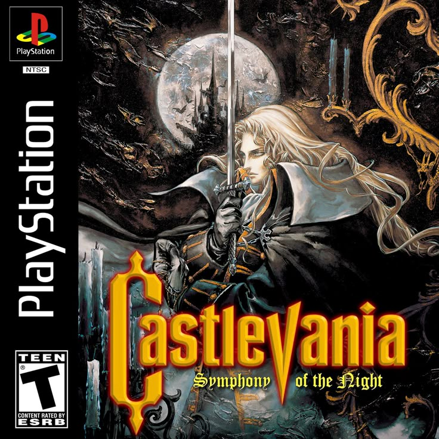
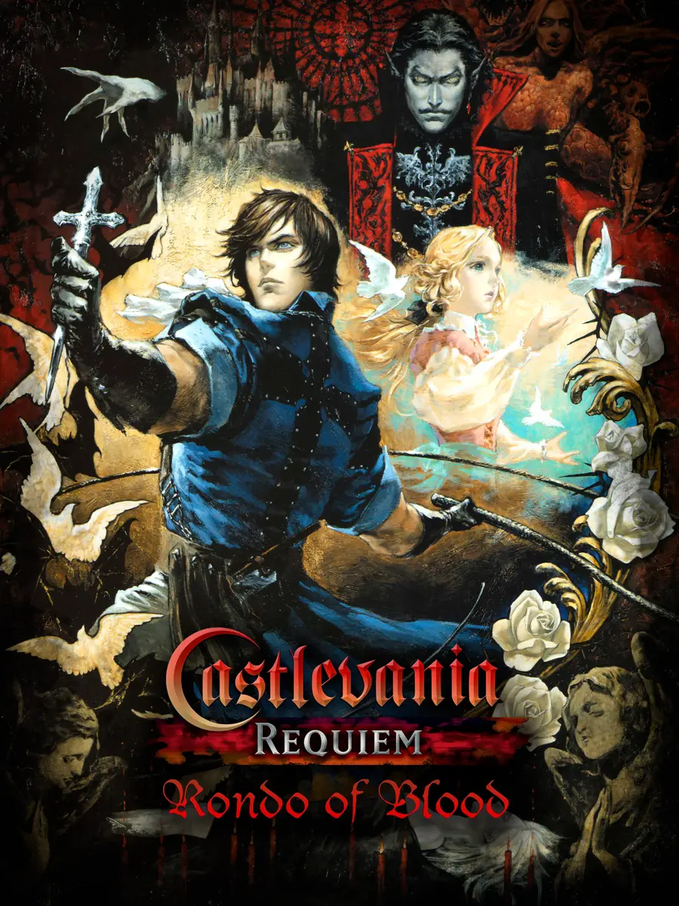
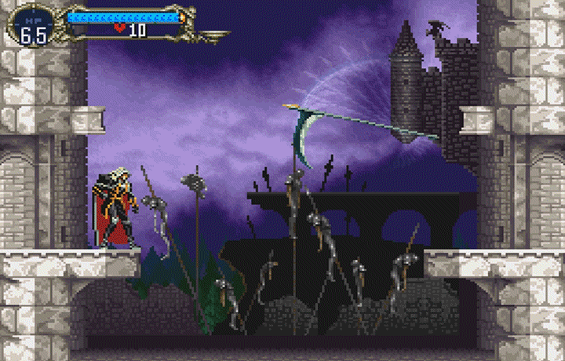

Castlevania: Symphony of the Night
es un juego de rol de acción de 1997 desarollado y publicado por Konami para Playstation y Sega Saturn
epilogo
Symphony of the Night comienza durante el final del juego anterior "Castlevania: Rondo of Blood",donde Richter Belmont se enfrenta y derrota al Conde Drácula.
trama
Cuatro años después, en 1796, Richter desaparece, y el castillo de Drácula reaparece un año después. Alucard llega al castillo para destruirlo,encontrándose con Maria Renard, quien una vez luchó junto a Richter y lo está buscando. Alucard se encuentra con Richter, quien afirma ser el nuevo señor del castillo.
